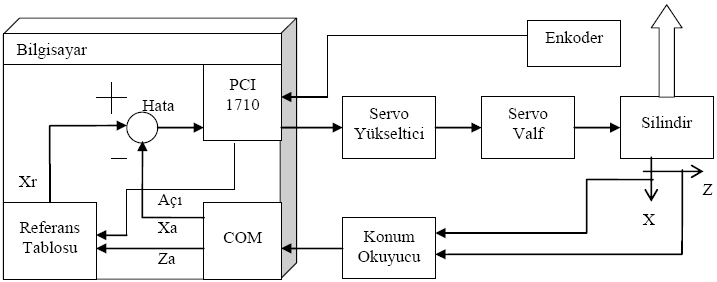
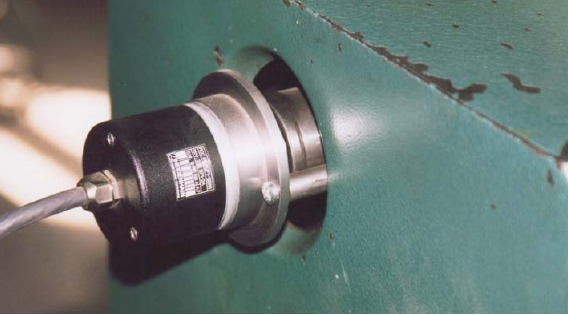
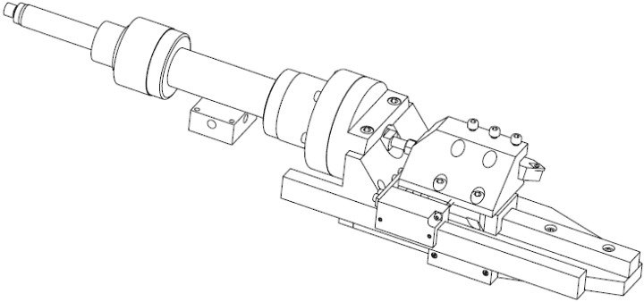
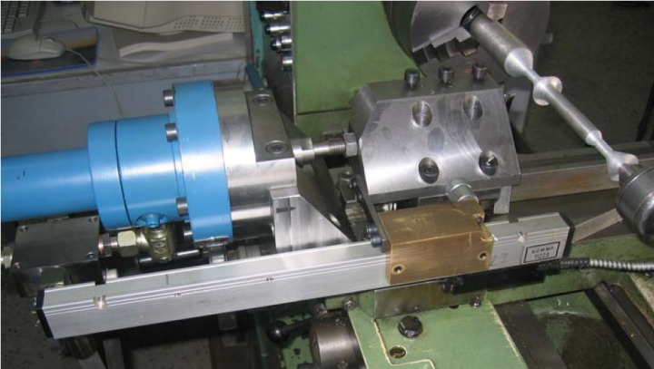

|
1. GÝRÝÞ
Klasik torna tezgahlarýnda iki eksenin ayný anda otomatik olarak hareketi mümkün deðildir. Bu sebeple silindirik olmayan geometrilerin elde edilmesi hemen hemen imkansýzdýr. Klasik tezgahlarda torna siperine açý vermek suretiyle sýnýrlý konik yüzeyler elde edilebilmektedir. Ancak, bu iþlemede tezgah operatörünün kabiliyeti yüzey kalitesini belirlemektedir. Günümüzde karmaþýk geometrili parçalarý iþleyebilmek için CNC tezgahlarý yaygýn olarak kullanýlmaktadýr.
Baþta içten yanmalý motorlarýn piston etekleri ve bazý takým tutucularýn þaftlarý gibi oval kesitli parçalarýn üretimi için özel tezgahlar kullanýlmaktadýr [1-4]. Bunlar ise özel tezgahlar olduklarýndan fiyatlarý oldukça yüksektir. Bu çalýþma ile konvansiyonel bir torna tezgahýna karmaþýk ve oval profilleri iþleyebilme kabiliyeti kazandýrarak daha ekonomik çözümler üretilmesi hedeflenmiþtir.
Daha önce yapýlan bir çalýþmada [5] sadece silindirik yüzeyde ovallik elde edebilen bir mekanizma geliþtirilmiþtir. Ancak bu sistem sadece piston eteðinin imalatýnda kullanýlabilmektedir. Deðiþken çaplý oval geometrileri ve karmaþýk profilleri iþleyebilme özelliðine sahip deðildir.
Bu çalýþmanýn amacý, bir konvansiyonel torna tezgahýnda istenilen karmaþýk profili iþleyebilmek için hidrolik tahrikli ve bilgisayar kontrollu bir düzenek ve bilgisayar programý geliþtirmektir.
Kontrol iþleminin bilgisayarda yapýlmasý bir çok avantaj saðlamaktadýr ve bugün bir çok alanda yerini almýþtýr. Uzay teknolojisinden robotlara kadar deðiþik tasarýmlar incelendiðinde mutlaka sayýsal bir kontrol sistemine rastlanmaktadýr. Her uygulamada bilgisayar kullanmak mümkün olmadýðý için, oldukça küçük ama fonksiyonel mikroiþlemciler sýklýkla kullanýlmaktadýr.
2. TASARIM
Profil tornalama sistemi hidrolik tahrikli ve bilgisayar kontrollu olarak tasarlanmýþtýr. Sistemin genel yapýsý Þekil 1'de verildiði gibidir.
Sistemin çalýþmasý kýsaca þöyledir: Tornanýn fener miline baðlanan enkoder yardýmýyla aynanýn açýsal konumu ve arabasýna takýlan lineer cetvel ile arabanýn z eksenindeki konumu okunmaktadýr. Bu konumlara karþýlýk gelen profilin referans konumu (x eksenindeki) bilgisayar hafýzasýndan çaðrýlmakta ve kesme takýmý konumunu ölçen transduserden (lineer cetvel) gelen sinyalle karþýlaþtýrýlmaktadýr. Görülen hata kontrol iþlemine tabi tutularak bir düzeltme sinyali hazýrlanmakta ve servo yükselticiye kontrol sinyali ulaþtýrýlmaktadýr. Bu sinyal ile servo-yükseltici çýkýþýnda servovalfý tahrik edecek bir akým oluþturulmakta ve servovalfa baðlý hidrolik silindir ile kesme takýmýnýn konumunun deðiþmesi saðlanmaktadýr.
Ölçme ve kontrol iþlemleri bilgisayar tarafýndan gerçekleþtirildiðinden, sistem, sayýsal kontrollu bir sistem olarak adlandýrýlmaktadýr. Bu çalýþmada kurulan sistemle ilgili olarak herhangi bir teorik analiz yapýlmamýþtýr. Ancak daha önce yürütülen tez çalýþmalarýnda [6,7], bu çalýþmada kullanýlan elemanlarýn bir kýsmý kullanýlarak teorik analizler yapýldýðýndan, bu çalýþmada gerekli olan hýzlarýn saðlanabileceði kanaatine varýlmýþ ve bu doðrultuda, laboratuarda bulunan cihazlar kullanýlmýþtýr. Sistemde kullanýlan ekipmanlar ve özellikleri aþaðýda incelenmiþtir.
2.1. Enkoder
Kullanýcý oval kesitli bir profil iþlemek istediðinde, kater referans konumunun belirlenmesi için araba konumuna ek olarak, aynanýn açýsal konumunun da ölçülmesi gerekmektedir. Bu amaçla sistemde Heidenhein marka ROC412 model TTL tipi bir enkoder kullanýlmýþtýr. Enkoderin çýkýþ sinyali "gray code" þeklinde ve 12 bit olup, bilgisayar yardýmýyla bu kodlara karþýlýk gelen açýsal deðerler bulunmaktadýr. Bilgisayara baðlý veri toplama ve kontrol kartý iki ayrý 8 bitlik sayýsal giriþ kanalýna sahip olduðundan ve bu kanallarý iki grup halinde peþpeþe okuyabildiðinden, enkoderin 8 bitlik kýsmý kullanýlmýþtýr. Böylece fener milinin bir turu 256 aralýða bölünerek konum kontrolu saðlanmýþtýr.
Enkoderin TTL türündeki bilgi verme yapýsý ve gray code üretme özelliðinden dolayý açýsal konum okuma kabiliyeti yüksek hýzlarda bile oldukça güvenli olmaktadýr. Deneyler sýrasýnda yanlýþ açýsal konum bilgisine hiç rastlanmamýþtýr. Enkoderin torna tezgahý üzerindeki görüntüsü Þekil 2'de verilmiþtir.
2.2. Bilgisayar ve Veri Toplama ve Kontrol Kartý
Deneylerde kullanýlan bilgisayar Pentium III 866 MHz iþlemciye sahip bir bilgisayardýr. Bilgisayara ADVANTECH marka, PCI-1710HG modelinde bir veri toplama ve kontrol kartý takýlmýþtýr. Kartta 12 bitlik 16 analog giriþ ve 8 bitlik 2 adet sayýsal giriþ (toplam 16 adet bir bitlik sayýsal giriþ) kanalý bulunmaktadýr. Kartta çýkýþlar ise 12 bitlik 2 analog ve 8 bitlik 2 sayýsal olmak üzere toplam 18 kanal þeklindedir. Kartýn analog sinyal okuma hýzý 100kHz'dir. Sayýsal giriþ okuma hýzý ise bilgisayardaki programýn çalýþma hýzýna baðlýdýr.

Þekil 1. Kontrol sistemin genel þemasý
Bu çalýþmada kartýn 8 bitlik sayýsal giriþ kanallarý enkoderden bilgi okumak için ve 1 analog çýkýþ da kontrol sinyali için kullanýlmýþtýr. Kartta bulunan analog çýkýþlar ± gerilim vermek yerine 0 ve + yönde (maksimum 10 V) gerilim üretmektedir. Servovalfin ise ± yönlü akýmla tahrik edilmesi gerektiðinden, bu olumsuzluðu çözmek amacý ile kontrol sinyalinin çýkýþý 2,5 V'luk gerilime sahip bir güç kaynaðýndan geçirilmiþ ve böylece 0-5 V analog çýkýþ voltajýna bir gerilim kaydýrma uygulanmýþtýr. Bununla, kontrol sinyalinin ±2,5 V aralýðýnda tutulmasý saðlanmýþtýr. Sistemdeki torna arabasýnýn ve kesici takýmýn konumunu ölçen lineer cetvellerden alýnan sinyaller bilgisayarýn COM portu kullanýlarak okunmaktadýr.
2.3. Servo yükseltici
Sistemde kontrol sinyalini akýma dönüþtürerek servovalfi tahrik eden MOOG marka bir servoyükseltici kullanýlmýþtýr. Servo yükselticinin maksimum çýkýþ akýmý 50 mA'dir. Tranduserin beslenmesi için kullanýlan gerilim servo-yükselticide bulunan sabit gerilimli çýkýþ kanallarýndan saðlanmýþtýr.
2.4. Servovalf ve Silindir Grubu
Sistemde kullanýlan servovalf MOOG marka 931 modeldir. Valfin maksimum basýnç düþüsü delta-p = 200 bar, %100 akýþ için verilmesi gerekli elektrik akýmý 13,25 mA ve bu basýnç düþüsü, maksimum giriþ akýmý ve sýfýr yük basýncý altýnda akýþ debisi 126 cm3/s'dir [6]. Sistemde kullanýlan silindir çift kollu olup, piston alaný ile kol kesit alaný arasýndaki fark olan etki alaný 6.4 cm2'dir. Silindirin stroðu 100 mm'dir.
2.5. Kesme Takýmý Hareket Düzeneði
Profil tornalama sistemi, özellikle oval tornalama esnasýnda çok küçük kurslarda çalýþacaðýndan, kesme takýmý konumunun tekrarlanabilme özelliði önem kazanmaktadýr. Yani, sistem kýzak ve ilerletme mekanizmasý boþluklarýna son derece duyarlýdýr. Bu ihtiyacý karþýlamak için torna arabasýnýn siperi sökülerek valf-silindir, lineer cetvel ve kesici takýmýn bir arada bulunduðu bir mekanizmanýn tasarýmý ve imalatý yapýlmýþtýr (Þekil 3). Kesici takýmýn hareketi için, INA marka KUVE serisi 30'luk anma ölçüsüne sahip 4 sýra rulmanlý lineer kýzak kullanýlmýþtýr. Bu yataklar ön yükleme ile (yani sýfýr boþluklu) montaj edildiklerinden ve sertlikleri de 63 HRC civarýnda olduðundan konum doðruluðu rahatlýkla saðlanabilmiþtir. Hareket düzeneðinin tezgaha montaj edilmiþ haldeki görüntüleri Þekil 4'de verilmiþtir.
2.6. Lineer Cetveller ve Konum Okuyucu
Sistemde torna arabasýnýn ve kesme takýmýnýn konumunu ölçmek için transduser olarak EAE marka Mikronel serisi konum okuyucu ve 2 adet lineer cetvel kullanýlmýþtýr. Lineer cetvellerin hassasiyetleri 0.005 mm'dir. Konum bilgisi okuyucu ekranýndan okunabilmektedir ve COM portu aracýlýðýyla bilgisayara aktarýlmaktadýr. Yapýlan deneylerde iki eksenin ayný anda, saniyede yaklaþýk 40 kez okunabildiði gözlenmiþtir.
2.7. Torna Tezgahý
Profil iþleme düzeneði TEZSAN marka MAS165 model torna tezgahýna montaj edilmiþtir. Tezgah 80 cm boyunda iþ kapasitesine sahiptir. Ýþ mili hýzlarý diþli kutusu ile saðlanmakta ve 45, 78, 132, 225, 335, 570, 960 ve 1620 d/dk olmak üzere 8 deðiþik hýz bulunmaktadýr. Ýþlenecek parçanýn çap ayarý tezgahýn arabasýndan yapýlmaktadýr. Hidrolik sistemi kapatýldýðý zaman kalem mevcut pozisyonunda kalmakta, böylece ayný kesme takýmýyla klasik tornalama yapmak mümkün olmaktadýr. Torna ve sistemin genel görünüþü Þekil 5'de verilmiþtir.

Þekil 2. Enkoderin tornadaki konumu
3. YAZILIM
3.1. Bilgisayar Programýnýn Genel Yapýsý
Program birkaç modülden oluþmaktadýr. Bu modüller türlerine göre pencerenin menüsünde sýralanmýþlardýr. Ayný türdeki modüller arasýnda pencerenin alt kýsmýndaki ileri ve geri tuþlarýyla geçiþ yapýlabilir. Program ilk çalýþtýrýldýðýnda, genel bilgilerin yazýlý olduðu bir pencere açýlýr.
Parça iþlemek için kullanýlan dört modül, "Parça Ýþleme" menüsünün altýndadýr. Bu modüller, programda parça iþlemek için gerekli olan dört adýmýn pencereleridir. Birinci adým, elde olan kullanýlabilir kalemlerin seçimidir. Kullanýcý, programda kayýtlý kalemlerden hangilerinin kullanýlmaya müsait olduðunu burada belirler. Kayýtlý kalemleri düzenlemek için kalem editörü kullanýlýr. Ýkinci adým profil seçimidir. Dosyadan profil yüklenebileceði gibi, profil editörüyle yeni bir profil de oluþturulabilir. Üçüncü adým, parçayý iþlemede kullanýlacak kalemin, iþleme aþamasýnýn seçildiði ve ham parça çapýnýn belirlendiði adýmdýr. Dördüncü adým, parçanýn iþlendiði adýmdýr. Ýþleme parametreleri gerekiyorsa ayarlandýktan sonra, gerekli sayýda paso ile parça iþlenir. Pencerenin bilgi bölümündeki deðerler istenilirse bir yazý dosyasýna kaydettirilebilir. Sistemin testi için kullanýlan üç adet pencere, testler menüsü altýndadýr. COM portu testi, konum okuyucudan eksen deðerlerinin okunmasýný ve eksenlere deðer yazýlmasýný kontrol etmek içindir. PCI kartý testinde, voltaj gönderilmesi ve 8-bit veya 12-bit analog/dijital veri okunmasý test edilebilir. Silindir kontrolü testinde, yapýlan ayarlara göre, deðiþik kontrol tipleri ve katsayýlarý ile silindirin, penceredeki kaydýrma çubuðu aracýlýðýyla konumunun kontrol edilmesi test edilir.

Þekil 3. Servovalf, silindir, lineer cetvel ve kesme takýmýnýn torna tezgahýna montajý

Þekil 4. Hareket düzeneðinin tornaya yerleþtirilmiþ hali
Yardým menüsünden programýn baþlangýç ekranýna dönülebilir veya program bilgisi görüntülenebilir. Herhangi bir pencerenin herhangi bir bileþeninde yardým istendiðinde, pencerenin sað üst köþesindeki soru iþaretine, sonra da ilgili pencere bileþenine týklandýðýnda ya da o bileþen aktifken F1 tuþuna basýldýðýnda, bilgi ve yardým metni içeren bir pencere çýkar. Bu bilgisayar programýnýn yapýlmasýnda Microsoft Visual Studio 6.0 Enterprise Edition paket programýndaki Microsoft Visual C++ 6.0 derleyicisi kullanýlmýþtýr. Program kodlamasý MFC (Microsoft Foundation Class) tekniðiyle yapýlmýþtýr. Bu yüzden, kullanýlan bütün veri ve fonksiyonlar türemiþ veya özgün sýnýf yapýlarý þeklindedir. Sade veri yapýlarý yerine veri yapýlarýyla fonksiyonlarýn ayný kümede bulunduðu sýnýf tekniðinin kullanýlmasýndaki amaç, karmaþýk veri yapýlarýnýn iþlenmesindeki zorluklarý kaldýrarak, sadece o veri sýnýfýnýn fonksiyonlarýný kullanmak suretiyle, verilerin daha az karmaþýk görünen kodlarla iþlenmesini saðlamaktýr.
|